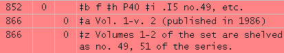

Contact
Princeton University Cataloging Documentation
Contact |
Princeton University Cataloging Documentation |
Booksets in a CAS
Call number on catalog record.
For example, if pt. 1 of a bookset is vol. 7 of a CAS with the call number DG1.F75, then the call number of the bookset will be:
If the first volume of the bookset is not available at the time of cataloging, the volume number in the call number should be that of the earliest volume in hand. In this case, the following 866 ‡x note should be added to the MFHD:
For example, if you have pt. 3 only of a bookset when cataloging, and it is volume 10 of a CAS with the call number HX1.J82, then the call number of the bookset will be:
In this case, if pt. 1 is received later, the call number on the catalog record should be corrected to reflect the earlier CAS volume number and the MFHD 866 note should be removed. Write the call number in book.
If pt. 4 were vol. 16 of the CAS, then the call number in the book for pt. 4 would be: HX1 .J82 vol. 16 Enum field in item record.
MFHD 866 note.

Series (Catalog separately, class as set) Series Decisions: CAS |
| ©2008 Princeton University Last Modified 01/18/2011 |